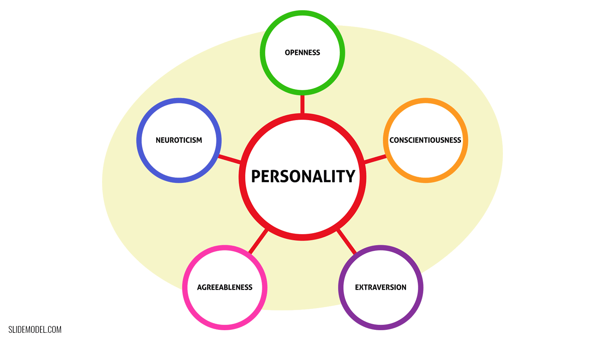

Employee turnover has reached record highs in the past year and is more volatile than ever, due to the role situational factors may play in causing employees to voluntarily quit. A study is proposed to investigate situational impacts on the relationship of personality and voluntary turnover. The five-factor model of personality is used to operationalize traits and trait activation theory is harnessed as the theoretical framework for situational factors differentially activating these personality traits. Shocks that activate the process of turnover unfolding are equated with distractor cues from trait activation theory. The current study suggests that work-related shocks may activate personality traits in different ways, increasing or decreasing an employee’s intent to turnover. Further, personality strength is proposed as a moderator of this relationship such that employees with stronger personalities will experience reduced change in their turnover intentions following a work-related shock. The contributions of this study are discussed in the form of strengths and weaknesses.
The Great Resignation began in 2021 as the world began to emerge from the COVID-19 pandemic that wrought havoc on economies and the normalcy of daily life. The Great Resignation is an ongoing economic trend in which an unprecedented number of employees have chosen to voluntary quit their jobs (Sull et al., 2022). In 2021 alone, 47.8 million people had quit their jobs compared to just 37.7 leaving in 2017 and through the middle of 2022 the pace had not slowed (Forbes, 2022). In fact, the rate of job quitting in the United States has reached the highest levels ever reported by the Bureau of Labor Statistics, and these trends are believed to be too high to be solely explained by labor market tightening (Gittleman, 2022).
Voluntary turnover can be viewed as a dynamic process in which pre-existing individual conditions and workplace conditions interact to cause a change in attitudes toward the organization and prompt the employee to exit (Hom et al., 2017). One component of these preexisting individual conditions that may influence turnover is the personality of the employee. Given that the current surge in employee turnover cannot be solely explained by market conditions, further research is warranted on the effects of employee personality as a mechanism of turnover.
To date, most research on employee personality and turnover involves meta-analytic correlational studies on the five-factor model of personality and turnover intentions (Timmerman, 2006; Zimmerman, 2008). The results suggest that openness to experience and extraversion are positive predictors of turnover, and conscientiousness negatively predicts turnover. Additional studies have examined the impact of positive and negative affectivity (Bouckenhooghe et al., 2013), Type A personality (Dole & Schroeder, 2001), and ‘bright’ and ‘dark’ personality traits on turnover (Woo et al., 2016). However, there is a considerable gap in the literature on the nuances of situational influences on personality traits that predict turnover. Further research into the nature of these predictor-criterion relationships is warranted because past studies lack theoretical grounding for the reasons personality may predict turnover and they are out of date with the current exponential turnover rates seen today in the Great Resignation.
Building on these existing bodies of research, the current study aims to broaden research on personality traits that predict turnover in organizations by considering situational factors that can exacerbate or inhibit this relationship. Specifically, the present study will use trait activation theory as a theoretical framework to assess the impact of distractors on personality traits on voluntary employee turnover. Guided by previous research in this domain, the five-factor model of personality will be used. Additionally, personality strength will be examined as a moderator that can buffer the push and pull of situational forces on voluntary employee turnover.
Researchers are increasingly focusing their attention on within-person variability to understand personality as a dynamic system that can fluctuate. Trait activation theory (TAT) considers personality traits as latent potentials to behave in certain ways in response to situational cues that activate traits (Tett et al., 2021). TAT posits that personality traits are engaged when called upon by the right situation and that a situation is relevant to a trait to the extent that it offers opportunities for that trait to be expressed (Tett et al., 2021).
There are five types of trait-relevant situational factors that may induce or reduce the expression of a personality trait (Tett & Burnett, 2003). First, demands are cues in which the response is positively valued. In terms of work outcomes, this could take the form of a diversity training being more accepted by employees who are high in openness to experience. Second, distractors are cues in which the response is negatively valued. Distractors result in negative work outcomes, such as performance feedback sessions distracting those high on core self-evaluation from listening to constructive feedback and learning being offered. Third, constraints are situational features that detract from the expression of a personality trait and make that trait less relevant. Fourth, releasers intermittently activate traits, making them more relevant. Finally, discretionary cues account for trait effects that are not related to value outcomes. Employees will be more motivated to meet their work demands when their job gives them the ability to engage in these discretionary traits.
The within-person variability explained by TAT is important to understand how certain personality traits when cued by situational features can result in increased employee turnover. This is especially true given how the understanding of employee turnover has changed in the field of IO psychology and the unstable conditions of turnover currently seen in the Great Resignation. Turnover was first conceptualized as a rational decision process (March & Simon, 1958). This early model postulated that when employees believe their contributions to the organization outweigh the benefits or rewards received, the employee-employer relationship becomes out of balance. The unbalanced employee-employer relationship causes the employee to consider leaving the organization. The consideration to leave the organization was operationalized as perceived desirability of movement and perceived ease of movement, or how easy it would be to move to another organization (March & Simon, 1958). If the employee is dissatisfied enough and there are other jobs available, the employee will quit (March & Simon, 1958).
This purely rational decision process was challenged by the intermediate linkages model which posed mediating steps in the process (Mobley, 1977). Mediating the process of turnover were a sequence of cognitive and behavioral steps of withdrawal an employee experiences between the initial experience of job dissatisfaction and the ultimate act of quitting. Withdrawal cognitions were said to be thoughts an employee initially has about quitting, the expected utility of leaving, and psychological withdrawal from work (Hom, 2011). In response to withdrawal cognitions, employees were said to engage in withdrawal behaviors such as job searching, evaluation of job alternatives, lateness and absences from their current position, work withdrawal, and decreased job performance (Hom, 2011). The model of intermediate linkages of turnover began to consider the role that individual differences in cognition and behavior could play in the decision of an employee to voluntary turnover.
The current understanding of employee turnover has evolved from these past models to be understood as an unfolding process (Lee & Mitchell, 1994). Moving away from rational turnover models, turnover is conceptualized as a dynamic, nonlinear process that unfolds over time in response to shocks that initiate the psychological decision processes involved in quitting (Hom, 2011). Shocks may be both work and non-work related. Work-related shocks include organizational changes (e.g., merger, new policy), psychological contract breaches (e.g., missed job opportunity, reduced job security, talented employees leaving the company), and the introduction of a new human resources practice (e.g., new compensation system, change of training and development opportunities). In comparison, nonwork-related shocks include childbirth, death in the family, elderly care, and marriage or divorce (Lee & Mitchell, 1994). The severity of shock impact differs by individuals, with some interpreting shocks as challenge stressors, while others interpret shocks as hinderance stressors (Hom, 2011). Individual differences in reaction to shocks further lend themselves to the use of TAT as a lens to understand how personality traits influence voluntary turnover.
Shocks, which are situational events that cause an employee to rethink their employer-employee relationship, can be equated to the situational cues that activate traits in TAT. Many of these previously discussed work-related shocks fall into the category of distractor cues and releasers. First, shocks seen as distractor cues would be shocks that result in poor work outcomes. As an example, a new policy that reduces the amount of training and development offered to employees might distract those high on openness to experience from feeling they are accomplishing appropriate career development at this company and look elsewhere for opportunities. Second, shocks seen as releasers would intermittently activate traits in employees in response to these work events. An example would be a sudden exit of talented employees from an organization may cause an employee high on extraversion to want to follow these employees and view the shock as an opportunity to leave the company in search of other companies that have talented employees. The high conceptual overlap of these situational features that prompt cognitive and behavioral changes in employees suggests that TAT may be an explanatory mechanism in the unfolding model of turnover.
Work-related shocks are ever more present in today’s era of the Great Resignation with employees switching freely between companies and market forces causing organizations to implement new policies and change organizational structure regularly. Given that TAT considers personality traits as latent potentials to behave in certain ways in response to situational cues that activate traits, work-related shocks can have different impacts on personality traits that could increase an employee’s tendency to voluntarily quit (Tett et al., 2021).
Personality has been traditionally conceptualized using the five-factor model (FFM) of personality (John, 2021). Defining personality in terms of the five traits that encompass the model ignores important structures and processes that contribute to the overall personality of a person (Norem, 2010); however, given the past research done in this domain using the FFM to predict employee turnover, an important contribution to the literature would be evaluating the situational impact on these well-established personality traits.
The FFM is made up of five personality traits: conscientiousness, extraversion, openness to experience, agreeableness, and neuroticism (McCrae & Costa, 2008). Out of the model, extraversion, openness to experience, and neuroticism are likely to positively predict turnover while conscientiousness and agreeableness are likely to negatively predict turnover. These traits are likely to be differentially activated by distractor cues that can be associated with work-related shocks that trigger the process of voluntary turnover to unfold.

Extraversion
The trait of extraversion is categorized as a preference for companionship and stimulation by social situations (McCrae & Costa, 2008). High extraversion is likely to positively predict turnover as these individuals will be more confident in their energetic approach to social interactions, which can be helpful when searching for a new job position (John, 2021). Individuals with high extraversion will have the social prowess to network and gain employment opportunities if they are unhappy with their current job situation. When faced with a work-related shock in their organization such as a job opportunity they were passed up on, individuals high in extraversion may respond by increasing their sociability as they begin to look for other job opportunities elsewhere. Therefore, the following hypothesis is proposed:
Openness to Experience
Similar to extraversion, high openness to experience is likely to positively predict turnover. Previous research has shown that individuals high in openness to experience may value changing jobs and have more of an open mind when considering leaving an organization (Maertz & Griffeth, 2004). The key characteristics of high openness to experience are intellectual curiosity and creative imagination (John, 2021). When faced with a work-related shock from an organizational change such as a number of talented employees exiting the company, an individual high in openness to experience may be activated to become curious about working at a different organization. They are likely to imagine themselves more easily in a different job position, and this could lead to their voluntary turnover from the organization. On the basis of these theoretical connections, the following is hypothesized:
Neuroticism
The final trait of the FFM posited to predict turnover is neuroticism. Individuals high in neuroticism tend to have more negative perceptions of themselves and their environment (John, 2021). Further, they are more volatile and less emotionally stable (McCrae & Costa, 2008). This high volatility suggests that when faced with a work-related shock, an individual high in neuroticism will become activated and react in a volatile nature. A work-related shock such as a psychological contract breach may be perceived in a more negative way that prompts an employee high in neuroticism to act in a rash manner and voluntary leave the organization. Therefore, the following is hypothesized:
Conscientiousness
Conscientiousness is a personality trait categorized as having a strong sense of purpose, high levels of aspiration, and high impulse control (John, 2021). Such factors of the trait result in positive work-outcomes and conscientiousness has been found to be most predictive of job performance in the FFM (Barrick & Mount, 1991). Due to their strong sense of purpose and high impulse control, individuals high in conscientiousness are more likely to sense a contractual obligation to an organization exists and feel a sense of organizational commitment (Zimmerman, 2008). When faced with a work-related shock such as the implementation of an unfavorable compensation system, individuals high in conscientiousness may become activated to feel a strong sense of purpose to stay with their current organization and see the change through. The high impulse control characteristic of high conscientiousness may buffer the negative outcomes of a work-related shock, causing a tendency to stay with the organization regardless of the situational factor. Based on these theoretical connections, the following is hypothesized:
Agreeableness
Agreeableness is characterized by adaptability, compliance, and trust (McCrae & Costa, 2008). Individuals high in agreeableness have a prosocial and communal orientation towards others even when confronted with hostility (John, 2021). Given their high trust and communal orientation, agreeable individuals are likely to be more understanding of any negative aspects of their organization. When faced with a work-related shock such as a merger, individuals high in agreeableness may become activated to increase their adaptability to the situation and trust that the organizational change was done in their best interest. In short, agreeable individuals will be more accepting of any shocks to the system. Therefore, the following is hypothesized:
Personality strength reduces the variability in behavior across situations (Dalal et al., 2014). Traits can be thought of as a density distribution of personality states. That is, traits are a mean level of trait-relevant behavior across situations (Dalal et al., 2014). When personalities are strong the trait-relevant behavior is less varied across situations whereas weak personalities result in higher variability across situations. Personality strength may buffer the activation of traits from situational factors, as postulated in TAT.
Given that personality strength reduces variability in behavior between situations within individuals, work-related shocks should have less of an impact on behavior change in individuals with strong personalities. Confronted with a work-related shock, personality strength will buffer against any behavior change as a factor of that shock. Stated simply, the stronger an individual’s personality the less behavior change will result from a work-related shock. In the scope of this study, an individual with a strong personality will have similar levels of turnover intent before and after they are confronted with a work-related shock, regardless of their FFM personality score. Therefore, the following is hypothesized:
Participants
Participants will be recruited from Academic Prolific. In order to be considered for the study participants must be 21 years or older, work at least 40 hours per week, been employed at their current organization for at least a year, and live in the United States. There are a number of factors important to the study that justify these controls. First, participants should be old enough to work a steady job and rely on that job as a source of income. The manipulations of this study are unlikely to be efficacious if participants are unfamiliar with this situation. Second, participants working 40 hours per week at a job for at least a year ensures that they have had sufficient exposure to their organization’s culture and are acquainted with current policies and procedures at that organization. It is important for participants to understand how an organizational environment may impact them personally. Finally, given the Great Resignation is primarily occurring in the United States, this is the population of interest to assess how personality may impact turnover.
Procedures
Participants will visit Academic Prolific, where they will sign up for the study. They will first sign an informed consent form outlining the study and complete the study requirements. If they do not meet any of the study requirements listed above, they will be thanked for their time and compensated. Upon passing the study requirements, they will be administered a personality test to assess their five-factor model of personality. Once they have completed the personality test, they will complete a measure of their personality strength.
Next, participants will be presented with a short vignette that presents a hypothetical situation of an organization. This vignette will describe the participant’s job position, details about the type of organization they work in, the culture of this organization, and current policies and procedures that impact their job. The vignette will be designed in such a way that certain aspects of the job are desirable (e.g., competitive salary) and some are undesirable (e.g., limited ability for promotion). The balance of the desirable and undesirable aspects of the job position will hopefully obtain a more realistic level of participant intent to turnover. After reading the vignette, participants will be asked their current level of turnover intentions at the organization on a scale from 0 – 100%.
Next, participants will be randomly assigned to presented with a number of work-related shocks that directly impact the vignette they just read. The work-related shocks will be presented as an email or memo that was just sent to them at their job. This random assignment and variation of work-related shocks is necessary because one type of shock may be too narrow to capture the wide range of situations that could impact one’s current job. There will be four work-related shocks presented to participants: decreased compensation, large number of talented employees leaving the company, being passed up for promotion, and a psychological contract breach in the form of being asked to work drastically more hours for the same level of pay. After reading the work-related shock manipulation, participants will once again receive a 0 – 100% scale to measure their intent to voluntarily quit the organization. Hypotheses will be tested using paired sample t-tests to assess differences in turnover intent before and after introduction of the work-related shock.
The above study offers contributions to the literature and examines a novel problem in the domain of turnover. Below, the strengths and weaknesses of the current study are discussed. The strongest aspect of the current study is the strong theoretical rationale for how work-related shocks will activate personality traits. TAT is a well-established theory of personality variability within people. The theoretical connections with work-related shocks in the unfolding model of turnover have been made clear and are logically quite similar. This allows for TAT to be integrated into this turnover theory, which I believe to be a strength of the study. Second, this study builds upon past research in this domain which has looked at the predictor-criterion relationships of personality and turnover. Therefore, there is existing empirical evidence, which this study is built on, but still addresses the novel problem of situational impacts. Third, this is the first study to assess the impact of work-related shocks on activating personality traits.
Addressing this research need is of paramount importance because turnover has been shown to be an unfolding process that is sparked by events rather than a rational decision by the employee. Simply assessing the relationships between personality traits and turnover leaves these situational shocks out of the equation and is therefore an incomplete look at what is truly occurring. The current study hopes to address this research need. Fourth, the work-related shock manipulations are varied in the study so as to assess a number of situational factors that could activate an employee’s personality traits in the decision to turnover from the organization. Picking one work-related shock for the manipulation would have been too narrow of a scope as it may not have been relatable to all participants. Hopefully with random assignment and four work-related shocks, a clear picture will be ascertained as to the impact on employee’s decisions to voluntarily turnover. Finally, upon completion of this study, theoretical and practical insights would be gained. Theoretically, a clear connection between TAT and the unfolding model of turnover would be established. This would allow for further exploration into the domain of personality and turnover, given that current research is fairly sparse. Practically, organizations would gain actionable insight into how to better manage employee turnover. Personality tests could be administered to employees upon selection into the organization. Employees with personality traits at risk of activation from work-related shocks could be flagged and intervened upon when the organization is aware they have been faced with a work-related shock (e.g., employee high in openness to experience is passed up for a promotion so the employee is flagged as a ‘flight-risk’ and the organization alerts the manager to schedule a developmental meeting with this employee).
However, this study is not without its marked weaknesses. First, the study uses the personality FFM to assess personality traits that may be at risk for turnover. This leaves a large portion of personality variation unaccounted for as the FFM does not account for more narrow traits or personality processes (Norem, 2010). Second, the study design has low external validity due to the inability to stimulate real work-related shocks in an employee’s organization. This could possibly be achieved in future studies by pairing with an organization and conducting a longitudinal experiment that assesses real work-related shocks as they relate to turnover. Third, there are no theoretical connections existing between TAT and the unfolding model of turnover. Through careful explanation and clear connections between the theory and model, I have argued for the integration of the two, but others may see shocks and distractor/releaser cues as theoretically unrelated.
Barrick, M. R., & Mount, M. K. (1991). The big five personality dimensions and job performance: a meta‐analysis. Personnel psychology, 44(1), 1-26. https://doi.org/10.1111/j.1744-6570.1991.tb00688.x
Bouckenooghe, D., Raja, U., & Butt, A. N. (2013). Combined effects of positive and negative affectivity and job satisfaction on job performance and turnover intentions. The Journal of psychology, 147(2), 105-123. https://doi.org/10.1080/00223980.2012.678411
Dole, C. and Schroeder, R.G. (2001), “The impact of various factors on the personality, job satisfaction and turnover intentions of professional accountants”, Managerial Auditing Journal, Vol. 16 No. 4, pp. 234-245. https://doi.org/10.1108/02686900110389188
Forbes. (2022, October 24). The great resignation, quiet quitting right now: Is it safe to quit a job in a recession? Forbes. Retrieved November 17, 2022, from https://www.forbes.com/sites/qai/2022/10/23/the-great-resignation-quiet-quitting-right-now-is-it-safe-to-quit-a-job-in-a-recession/?sh=30b84d7d62b1
Gittleman, M. (July, 2022). “The “Great Resignation” in perspective,” Monthly Labor Review, U.S. Bureau of Labor Statistics. https://doi.org/10.21916/mlr.2022.20
HB chapter 2: John, O. P. (2021). History, measurement, and conceptual elaboration of the big-five trait taxonomy: The paradigm matures. In O. P. John & R. W. Robins (Eds.), Handbook of personality: Theory and research., 4th ed. (pp. 35-82). The Guilford Press.
Hom, P. W. (2011). Organizational Exit. In S. Zedeck (Ed.), APA Handbook of Industrial and Organizational Psychology (1st ed., Vol. 2, pp. 325–375). essay, APA Handbooks in Psychology. https://doi.org/10.1037/12170-000
Hom, P. W., Lee, T. W., Shaw, J. D., & Hausknecht, J. P. (2017). One hundred years of employee turnover theory and research. Journal of applied psychology, 102(3), 530. https://doi.org/10.1037/apl0000103
Lee, T. W., & Mitchell, T. R. (1994). An alternative approach: The unfolding model of voluntary employee turnover. Academy of management review, 19(1), 51-89. https://doi.org/10.5465/amr.1994.9410122008
Maertz Jr, C. P., & Griffeth, R. W. (2004). Eight motivational forces and voluntary turnover: A theoretical synthesis with implications for research. Journal of management, 30(5), 667-683. https://doi.org/10.1016/j.jm.2004.04.001
March, J., & Simon, H. (1958). Organizations. New York: Wiley.
McCrae, R. R., & Costa, P. T., Jr. (2008). The five-factor theory of personality. In O. P. John, R. W. Robins, & L. A. Pervin (Eds.), Handbook of personality: Theory and research (pp. 159–181). The Guilford Press.
Meyer, R. D., Dalal, R. S., José, I. J., Hermida, R., Chen, T. R., Vega, R. P., … & Khare, V. P. (2014). Measuring job-related situational strength and assessing its interactive effects with personality on voluntary work behavior. Journal of Management, 40(4), 1010-1041. https://doi.org/10.1177/0149206311425613
Mobley, W. H. (1977). Intermediate linkages in the relationship between job satisfaction and employee turnover. Journal of Applied Psychology, 62(2), 237–240. https://doi.org/10.1037/0021-9010.62.2.237
Norem, J. K. (2010). Resisting the hegemony of the Five-Factor Model: There is plenty of personality outside the FFA. Psychological Inquiry, 21(1), 65-68. https://doi.org/10.1080/10478401003648799
Sull, D., Sull, C., & Zweig, B. (2022, January 11). Toxic Culture is Driving the Great Resignation. ACMP NorCal Chapter. MIT Sloan Management Review. Retrieved November 17, 2022, from https://www.acmpnorcalchapter.org/changemanagement-articles.
Tett, R. P., & Burnett, D. D. (2003). A personality trait-based interactionist model of job performance. Journal of Applied Psychology, 88(3), 500–517. https://doi.org/10.1037/0021-9010.88.3.500
Tett, R. P., Toich, M. J., & Ozkum, S. B. (2021). Trait activation theory: A review of the literature and applications to five lines of personality dynamics research. Annual Review of Organizational Psychology and Organizational Behavior, 8, 199-233. https://doi.org/10.1146/annurev-orgpsych-012420-062228
Timmerman, T. A. (2006). Predicting turnover with broad and narrow personality traits. International Journal of Selection and Assessment, 14(4), 392-399. https://doi.org/10.1111/j.1468-2389.2006.00361.x
Woo, S. E., Chae, M., Jebb, A. T., & Kim, Y. (2016). A closer look at the personality-turnover relationship: Criterion expansion, dark traits, and time. Journal of Management, 42(2), 357-385. https://doi.org/10.1177/0149206315622985
Zimmerman, R. D. (2008). Understanding The Impact Of Personality Traits On Individuals’ Turnover Decisions: A Meta‐analytic path model. Personnel psychology, 61(2), 309-348. https://doi.org/10.1111/j.1744-6570.2008.00115.x